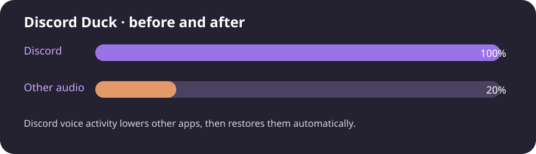

◒
Global audio control
Lower every non-Discord application instead of limiting ducking to one browser.
Discord Duck automatically lowers other application audio while someone speaks in Discord, then restores it when the conversation ends.

Designed to stay out of the way while giving you the controls you actually need.
Lower every non-Discord application instead of limiting ducking to one browser.
Discord, Vesktop, and WebCord are excluded from the ducking target.
Toggle the daemon, sensitivity, and release duration directly from the terminal.
The voice channel remains clear while other audio steps back.

When the voice activity ends, the original per-application volumes are restored automatically.
Choose your platform and follow the complete guide in the repository.
PipeWire/PulseAudio daemon with a systemd user service.
git clone https://github.com/Aracellii/Discord_Duck.git
cd Discord_Duck/linux
python3 install.pyWindows Audio Session API with a Task Scheduler daemon.
git clone https://github.com/Aracellii/Discord_Duck.git
cd Discord_Duck/windows
py -m pip install pycaw comtypes
py discord_duck_windows.py --install